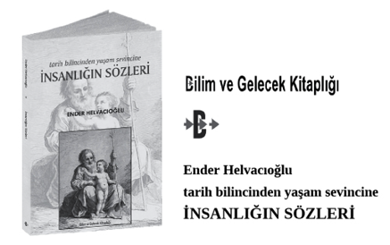

Caz Sözlükçesi
A bölümü: (İng. a section) Bir melodinin 8 ölçülü ilk bölümü; ana tema.
A cappella: (Lat. “kilise tarzında”) Eşliksiz olarak, çoğunlukla, “çalgı eşliği olmadan” seslendirilen çok sesli koro yapıtları için kullanılır.
Abantı: (İng. appogiature) Basamak, çarpma notası ve zorba olarak da bilinir; bir üst ya da bir alt sese dokunarak esas sese geçişle yapılan müzik süslemesidir.
Accent: Bkz. Vurgu.
Accidental: Bkz. Değiştirme, değiştirme işareti.
Accompaniment: Bkz. Eşlik.
Acid jazz: Hip hop ritimleriyle kaynaşmış caz doğaçlaması.
Acoustic bass: Bkz. Kontrbas.
Action: Telli bir çalgıda, tellerle perdelik arasındaki mesafe.
Açkı: Bkz. Anahtar.
Adagio: (İt. “rahatça”) Müzikte “yavaşça”, “çok yavaşa yakın.” Metronomda dakikada 60-70 vuruş.
Ağaç üflemeli çalgılar: (İng. woodwind instruments; Alm. Holtz bläser, Holtzblastinstrumenten; Fr. étant en bois; İt. strumenti musicali a fiato, legni; İsp. instrumentos de madera) Sesleri, icracının üflediği havanın çalgının keskin bir kenarına çarparak ya da bir ağızlık aracılığıyla dili titreştirerek çalgının içindeki hava sütununu harekete geçirip titreştirmesiyle oluşan çalgılar. Terimdeki “ağaç” sözcüğü, bu grupta yer alan çalgıların çoğunun önceleri tahtadan yapılmasından kaynaklanır.
Ağız biçimi: Bkz. Embouchure.
Ağızlık: Bkz. Embouchure.
Air: 1) Ezgi; bir ya da iki kişinin şarkı olarak söylediği ya da bir çalgıyla çalınan basit ezgi ya da melodi. 2) Melodi özelliği ağır basan beste.
Akor: (İng. chord) Uygu olarak da bilinir; armoni kurallarına göre bir gamın ana hatlarını oluşturan iki ya da daha çok sesin eşzamanlı olarak çalınmasına verilen ad. Akor, armoninin temel birimini oluşturur; kuramsal olarak belli bir kökten başlar ve bu kökten belirli aralıklarda olan bazı başka tonları belirler.
Akor dizimi / ardışımı: (İng. chord progression) Bir melodiyi armonize etmek ya da doğaçlamaya temel sağlamak üzere kullanılan akorlar dizisi. Bir akordan öbürüne geçiş; cazda bunun için changes terimi de kullanılır.
Aksansız vuruş: Bkz. Up-beat.
Aksatım: (İng. syncopation). Senkoplama olarak da bilinir. Normalde zayıf olan vuruşu vurgulamak; “hafif vuruş”ların kuvvetli vuruşa çevrilmesi; vurguların beklenmedik yerlere yerleştirilmesi.
Akustik bas: Bkz. Kontrbas.
Allegro: (İt. “neşeli”) Parçanın hızlı seslendirileceğini gösteren terim. Metronomda dakikada 120 - 168 vuruş.
Alligator: (İng. “timsah”) Caz müzisyenlerinin birbirleri için kullandıkları deyim. Sonraları “gator” olarak kısaltıldı.
Alteration: Bkz. Değiştirme, değiştirme işareti.
Altered scale: Bkz. Değiştirimli dizi.
Alto: Şan tekniğinde en tiz erkek, en pes kadın sesi.
Alto clef: İng. c clef, viola clef olarak da bilinir. Bkz. Do açkısı.
Alto saksofon: Saksofon ailesinin tenor saksofondan daha tiz, soprano saksofondan daha pes sesli üyesi.
Ambient: Çevreleyen, hava, ortam. Bestecinin (ya da icracının) bir hava yaratmak üzere kullandığı yankılama ve benzeri teknikler.
Ambient music: Bkz. Hava, ortam müziği.
Amplitude: Bkz.Genlik.
Anahtar: (İng.ve Fr. clef, Fr. Alm. Schlüssel, İt. chiave) Açkı, başlık olarak da bilinir. Bir müzik notasının başında yer alan ve dizekin (portenin) bir çizgisini belli bir perde (ya da nota) olarak belirleyen, böylece o ses dizisinin (gamın) öteki notalaırının da yerlerini belirlemiş olan işaret. Örneğin solanahtarı, orta sol notasını (sol 4’ü); portenin ikinci çizgisi olarak gösterir. Fa açkısı ya da bas anahtarı, orta do’nun altındaki fa’yı, dizeğin dördüncü çizgisi olarak gösterir.
Andante: (İt.) Orta karar yürüyüş hızında tempo. Metronomda dakikada 66 - 72 vuruş.
Angular: Bkz. Köşeli, sıçramalı ezgi.
Anlatım: (İng. expression) Dışavurum, ifade olarak da bilinir; müzisyenin bir notayı çalarken bestecinin ya da parçanın anlattığı şeyi iletmek için kullandığı ses tonu ve tane tane söylemek (articulation), tempo, teknik de (yay çekiş, parmak basış, pedal kullanımı, cümleleme) içinde olmak üzere birbirinden farklı pek çok değişik icra özelliğinin her birini kapsayan terim.
Antifonal: İki ses ya da çalgı grubu ya da solocu ile koro, solocu ile orkestra arasında birbirini yanıtlama biçiminde müzik icra ediş ya da söyleyiş. Cazda, doğaçlamacılar ya da bir bandın bölümleri arasında soru ve yanıt ya da çağrı ve yanıt biçimini alan ortak etkileşimi anlatan bir terimdir. Bu uygulamayı en çok kullananlardan biri Fletcher Henderson’dur. Bkz. Çağrı ve yanıt.
Appogiatura / appogiature: Bkz. Abantı.
Aralık / interval: İki nota arasındaki “mesafe”, yani herhangi iki nota arasındaki perde farkı. Bir aralığın “büyüklüğü” sayısal olarak belirtilir; örneğin do gamından yola çıkılıyorsa, do ile sonraki beşinci nota sol arasındaki do-sol aralığına, beşli adı verilir.
Aranjör: Düzenleyici.
Arıza: Bkz. Değiştirme işareti.
Aria: Operalarda solo insan sesi için yazılan beste.
Arka sıra: Bkz. Back line.
Armatür: (Fr. armature) Bkz. Donanım.
Armoni: 1) Aynı anda seslendirilen iki ya da daha fazla notanın sesi. 2) Akorların kuruluşunu, aralık ya da akorların birbirine nasıl bağlandığını inceleyen bilim.
Armonik sesler: Bkz. Doğal armonikler.
Arpej: (İt. arpeggio, Fr. arpege) Kırık akor olarak da bilinir. Aynı anda çalınacak yerde, birbiri ardına hızla çalınan akor sesleri. Genellikle en pes notadan başlar, tizleşerek ilerler. Partisyonda çalındıkları şekliyle bütün notalar gösterilerek yazıldığı gibi, akorun sol yanında girintili çıkıntılı dik bir çizgi ile de gösterilir. Notaları eşzamanlı değil, art arda çalınan akor.
Art vuruş: Bkz. Backbeat.
Artık aralık / Artırılmış aralık: (İng. augmented interval) Genişletilmiş aralık olarak da bilinir; yarım ses artırılmış ya da tizleştirilmiş aralık.
Artırım: (İng. augmentation) Bir tema ya da kısa melodide bütün notaların sürelerini artırmak. Örneğin çeyrek sesleri yarım sesler, yarım sesleri tam sesler haline getirmek. Müzikte hem artırım hem eksiltim, çeşitleme aracıdır. Karşıtı eksiltim.
Articulation: Eklemleme, söyletim, telaffuz olarak da bilinir. 1) Tane tane, belirterek söylemek. 2) (Üflemeli çalgılarda) bir notanın başlatılmasında ya da durdurulmasında dilin kullanılıp kullanılmayacağını; 3) (Telli çalgılarda) parmakla çekilerek mi, mızraplanarak mı, yaylanarak mı çalınacağını gösteren özellikler.
Asış / Askıya alış: (İng. suspension) Duraklatış olarak da bilinir; bir akorun, o akorla uyumsuz (disonant); ikinci bir akor seslendirilirken duraklatılan, başka deyişle uzatılan ya da asılı kalan notası.
Atak: (İng. attack; İt. attaca) Atılım, giriş olarak da bilinir. Bir müzik cümlesine gecikmeden başlayış ya da bir çalgı ya da ses topluluğunda farklı çalgıların ya da seslerin tam zamanında girmesi ya da ara bırakmadan öteki bölüme geçiş yönergesi.
Atılım: Bkz. Atak.
Atmospher piece: Bir ortam yaratan ya da belli bir ortamın havasına uygun olan müzik parçası
Atonal: Belli bir ses dizisi ya da tonalitede olmayan, tonal merkezi ya da ekseni iyi belirlenmemiş, diyatonik olarak düzenlenmemiş müzik; çoğu zaman akorların ve geleneksel diğer armoni yapılarının yokluğu anlamına gelir.
Augmentation: Bkz. Artırım.
Augmented: Bkz. Artık ya da artırılmış aralık.
Autonomous / autonomy: (İng. “özerklik”, “özerk”) Caz müzisyenlerinin istedikleri her şekilde akor basmaları için kullanılan deyim.
Avant-garde: (Fr. “öncü”) Denenen müziklerin en ön safında olan müzik stili; başlangıçta freebop ve anlatımcı caz stilleri için kullanıldı.
Avant-garde jazz: Genellik atonal, yani önceden kararlaştırılmış akor değişikliklerine dayalı olmayan caz; serbest bir biçimde doğaçlama çalınan, ama genellikle yapısı ya da tasarımı bulunduğu anlaşıldığı için tümüyle “özgür” olmayan caz. (Bu terim 1960’lı yıllarda John Coltrane, Ornette Coleman, Cecil Taylor, vb gibi sanatçılarla onları izleyen sanatçıların çok daha serbest bir biçimde doğaçlanan müziklerini tanımlamak için kullanıldı.)
Axe: (İng. “balta”) Cazcılar arasında bir müzisyenin çalgısını belirten deyim, bazen çalgının sesi için de kullanılır.
B bölümü: (İng. B section) Bkz Bridge.
Back line: (İng. “arka sıra”) İlk caz topluluklarının ritim bölümlerine ilişkin terim. Bu topluluklarda “arka sıra”yı oluşturan çalgılar piyano, bateri, kontrbas ve gitar ya da öteki çalgıları kapsıyordu. Bkz. Front line (“ön sıra”), genellikle bakır üfleme çalgı ve saksofondan oluşan melodi bölümüydü.
Backbeat: Art vuruş olarak da bilinir; 4/4’lük tempoda güçlü vurulan ikinci ve dördüncü vuruş. Avrupa klasik müziğinde güçlü vuruş, birinci ve üçüncü vuruşta olmasına karşılık, caz genellikle art ya da “bir sonraki” vuruları vurgular.
Background: Eşlik olarak çalınan bir parti. Bu terim özellikle melodi çalgılarının icra ettiği eşlikler için kullanılır.
Bakır üflemeli çalgılar: (İng. brass instruments; Alm. blechblas-instrumente; Fr. cuivres; İt. ottoni; İsp. instrumentos de metal) Genellikle bronzdan yapılan, sesin dudakların titreştirilmesi aracılığı ile üretildiği çalgılar. Perdesini kısmen çalgının ucuna takılan ağızlığın belirlemesine karşılık, çoğu durumlarda çalgının sesi, boru boyunu değiştiren perde ve sürgü gibi mekanizmalarla değişir.
Balad: (İng. ballad; Fr. ballade) Cazda yavaş tempoyla basit bir koşuk içinde çalınan, romantik, duygusal beste ya da ağır, sakin ve çoğunlukla hoş bir öykü anlatan solo şarkı; kendine özgü anlatım özellikleriyle doldurulur. Ortaçağdaki Fransız gezginci müzikçilerin (trouver’lerin) müzik ve şiir türüne verilen addan gelir. Bkz.Troubadour, Trouvere, Minnesinger.
Banço: (İng. banjo) İlk olarak zenci köleler tarafından yapılan, minstrel’lerin onlardan görerek kendi gösterilerinde kullandıkları çalgı. Cazda genellikle geleneksel caz stilleri çalınırken kullanılan gitara benzeyen, perdeli, beş ya da daha fazla telli, parmaklarla ya da pena ile çalınan çalgıdır. Gershwin’in Porgy ile Bess ve Delius’un Koanga’sının orkestrasyonunda kullanılmıştır.
Band: Bando olarak da bilinir; yaylı çalgıların ağır bastığı orkestradan farklı olarak, bakır ve ağaç üflemeli çalgılarla vurmalı çalgılardan oluşan müzik topluluğu. Bkz. Jazz band.
Bando: Bkz. Band.
Bariton saksofon: (İng. baritone saxophone) Saksofon ailesinden, sesi tenor saksofondan daha pese akort edilen, melodi çalgısı ya da bas ritim çalgısı olarak kullanılan ağaç üflemeli çalgı.
Barn dance: (İng. “ambar dansı”) Çoğunlukla ambarlarda yapılan her türlü dansa verilen ad olmakla birlikte, genellikle geleneksel ve halk müziğinin eşliğindeki geleneksel dansları içerir.
Barrelhouse: (Amer. İng. “fıçı evi”) 1) Konuşma diline 1800’lü yılların sonunda giren, avamın uğrak yeri olan, sert içkilerin, genellikle de viskinin fıçılardan bardağa doldurulduğu meyhane ya da geneleve verilen ad. 2) 1800’lü yılların sonunda böyle bir ortamda doğan ve kalabalığı dans etmeye kışkırtan aşırı vurmalı ve çok yüksek sesli piyano çalış tarzı.
Bas gitar: (İng. bass guitar) Elektrogitarın daha pes sesli bir türü. Özellikle soul cazında ve fusion stillerde bas çalgı olarak kullanılır.
Bas: 1) Pes notalar. 2) Tipik olarak bas notaları çalan bir çalgının işlevi. Bu terim çoğu zaman özellikle akustik bas (kontrbas) için kullanılır.
Basamak: Bkz. Abantı.
Başlık: Bkz. Anahtar.
Bateri: (İng. drums, drum set; Fr. battery) Tek bir icracı tarafından seslendirilen davullar, ziller ve daha başka vurmalı çalgılardan oluşan çalgı takımı.
Beat: Bkz. Vuruş.
Bebop: 40’lı yılların başlarında genç çalgıcılar, özellikle Parker, Gillespie, Kenny Clarke, Charlie Christian, Bud Powell tarafından geliştirilen caz stili. Küçük topluluklar tercih ediliyor ve basit standart ezgiler ya da uzun, düzensiz, senkoplu tümcelemeler kullanan hızlı, çok-notalı doğaçlamalar için sıçrama tahtası olarak, bunların yalnızca akor ilerleyişleri kullanılıyordu. Doğaçlama ezgiden çok kordal armoniye dayanıyordu. Doğaçlamada ve piyano akor seslendirmelerinde akorların “tiz aralıkları” (dokuzuncu, on birinci ve on üçüncü) vurgulanıyor ve değiştirmeler, özellikle artırılmış on birli, öncekinden daha özgürce kullanılıyordu.
Bent pitch: (İng. “kıvrık perde”) Çalınırken, perdesi yükseltilen ya da indirilen nota.
Biçem: Bkz. Stil .
Big band: (İng. “büyük band”) 1935’ten 1940’lara kadarki Swing döneminde çok yaygınlaşan müzik topluluğu. Big band’de tipik olarak 12 - 19 müzisyenden oluşan, en çok beş saksofon, beş trombon, beş trompetin yanı sıra, bir klavyeli çalgı, bateri, gitardan oluşan bir ritim bölümü yer alır. Cazın erken döneminde banço ve tuba da yer alırdı. Çoğunlukla doğaçlanan ve çalınırken yaratılan daha küçük jazz combo’larının tersine, big band’ler son derece “uyarlanmış, düzenlenmiş” ve notaları kitap olarak hazırlanmış müzikler kullanır. Jazz band, jazz ensemble, stage band, jazz orchestra ve dance band adlarıyda da bilinir.
Bitiş: Bkz. Kadans.
Blaring: (İng. “yüksek sesli”) Keskin korna, keskin boru sesli.
Block chords: Blok akorlar. Kilitli eller olarak da bilinir. Sağ ve sol eller aynı notaları çalar. Birbirine “kilitlenen” ellerle, genellikle melodiye oldukça yakın konumda koşut olarak çalınan bir piyano çalma stili; Milt Bucner ve George Shearing tarafından geliştirildi. Bu çalış çok egzersizi gerektiren teknik bir işlemdir ve armonileri gerektiği kadar ileri değilse, modası geçmiş bir seda verebilir.
Blok akorlar: Bkz. Block chords.
Blow: (Trk. “üfürmek”) 1) Cazda üfleme çalgı çalmanın argo deyimi. “Doğaçlama” için yaygın olarak kullanılan terimdir. 2) Çalgıyı çalmak.
Blowing session: (Trk. “üfürüm oturumu”) Caz icraları için kullanılan bir deyim.
Blue-note: Bkz. Mavi nota.
Blues: 1) Amerikalı siyahların 1911 dolaylarında ünlenen ağır, kederli şarkıları. Dörder ölçülük üç ölçülü üç kıtadan oluşur; her kıtanın ikinci dizesinin birinciyi yinelediği ya da biraz değiştirerek yinelediği, mavi notaların çok kullanıldığı şarkı stili. Cazın evriminde belli başlı bir öğedir. Ayrıca, 2) Piyanoda sol el sürekli sekiz notalık kalıpları yinelerken, sağ elin heyecanlı ama çoğu kez belli blues rif’leri ve figürleri çaldığı caz çalış biçimi.
Blues dizimi: (İng. “Blue progression”, “Blues progression”) Mavi dizim olarak da bilinir. Blues ve cazda sık kullanılan, dört ölçülük üç cümleye bölünmüş ve birinci, dördüncü ve beşinci. akorlara dayanan iki ölçülük akor dizimi.
Blues scale: Blues skalası. Bir ya da daha fazla blues notası içeren ve tipik olarak cazda kullanılan bir skala.
Boogie (Boogie-woogie): Geçen yüzyılın 30’lu yıllarında sol elle durmadan tekrarlanan kalıplar çalınırken, sağ elle heyecanlandırıcı, ama çoğunlukla tekdüzeleşmiş blues riff’leri ve figürlerinin çalındığı çok yaygın bir piyano çalış stili.
Brass instruments: (İng.) Bkz. Bakır üflemeli çalgılar.
Break: 1) Caz topluluğunda, bir solistin eşliksiz olarak çaldığı, eşsesli (homofonik) ya da çoksesli (polifonik) yapıda olan parçayı, teksesli (monofonik) yapıyla karşılayan 2 - 4 ölçülük kısa geçiş. 2) Vokal bir parçada çalgısal geçiş bölümü.
Bridge / Channel: (İng. “köprü”) Bir ezginin karşıt olan orta bölümü. Bir müzik parçasının birbirinden farklı iki bölümü arasındaki bağlayıcı kesim, örneğin sekiz ölçülük bölütler içeren A-A-B-A’dan oluşan standart 32 ölçülük şarkının B bölümüne köprü adı verilir. Başka deyişle, bir müzik parçasında farklı iki müzik bölütünü birbirine bağlayan bölüm.
Broken chord: (İng. “kırık akor”) Bkz. Arpej.
Broken time: Bkz. Kırık tempo.
C clef: Bkz. Do anahtarı.
Cazbant: Bkz. Jazz band.
Cadence / Close: Bkz. Kalış.
Call and Response / Responsorial: Bkz. Çağrı ve yanıt.
Chamber jazz: Oda cazı. İzlenimci caz ile Avrupa klasik müziğinin kaynaşmış bir biçimi.
Changes / Rhythm changes: 1) Bir ezginin akorları. Akor dizimine changes’i çalmak denir ya da ezginin her verili akoru üzerinde uygun skalalar vb. kullanmak anlamına gelir. Kullanılacak tam changes’i kararlaştırmak bir ezginin icrasına hazırlanmanın büyük bölümüdür. 2) Rhythm changes’in (ritim değişiklikleri) kısaltılmışı.
Channel: Bkz. Bridge.
Chart: 1) Herhangi bir müzik partisyonu. 2) Caz müzisyenlerinin kullandığı özel tipte partisyon. Yalnızca melodi dizesi, (varsa) sözler ve akor sembolleri gösterilir.
Chase: Trompet ve saksofon gibi iki çalgı solistinin 4 ölçülük (8 ya da 2 ölçü de olabilir) nöbetleşe çalışları. Ayrıca bkz. Çağrı ve yanıt.
Chops: Bir müziği icra etme ve akor değişmelerine yanıt verebilme teknik becerisi. Kısa ve hızlı, kesercesine vuruş. Bir caz sanatçının çalgısı üzerindeki ustalığı için kullanılan argo terim.
Chord: Bkz. Akor.
Chord progression: Bkz. Akor dizimi.
Chord tones: (İng. “akor notaları”) Genişletmelerin tersine, bir akorun kök, üçüncü, beşinci ve yedinci notasından oluşan akor dizimi.
Chord symbol: Akor simgesi. Bir akoru göstermek üzere kullanılan yazılı simge.
Choral: Bkz. Koral.
Chorus: 1) Müzikte bir şarkının her kıtasını izleyen ve yinelenen bölümü. Türkçe nakarat olarak kullanılır. 2) Tek ya da çoksesli olarak söyleyen, çoğunlukla kadın ve erkeklerden oluşan bir şarkıcılar topluluğu; dilimize koro olarak yerleşmiştir. (Yabancı dilde eşanlamlı olan chorus sözcüğü ile choir sözcüğü arasında açık ve belirgin bir fark olmasa da, choir terimi çoğunlukla dinsel müzik seslendiren topluluklar, chorus sözcüğü ise dindışı müzik seslendiren topluluklar için kullanılmaktadır. Her zaman açıkça tanımlanmasa da bu faydalı bir ayrımdır.) 3) Cazda chorus terimi, ana temanın solo icrası ve çoğunlukla bu temaya dayanan bir dizi çeşitleme için de kullanılır. Cazda bu terimin daha başka göndermeleri de vardır. Bazen caz parçasını bir kez çalmaya da chorus denir.
Chorus almak / Chorus’a binmek: Cazda, şarkının akorları üzerinde solo yapmak.
Chromatic: Bkz. Kromatik.
Clef: Bkz. Anahtar.
Cliche: Klişe. Birçok müzisyen tarafından çok kez çalınan, “doğaçlama” gibi görünen ritim kalıbı.
Cluster: Küme. Standart herhangi bir form oluşturmayan birlikte seslendirilen bir dizi nota; özellikle piyanoda birbirine yakın notalar.
Coda / Outro: (İt. “kuyruk”) Bkz. Koda.
Collective improvisation: (İng. “Ortak doğaçlama”) Aynı anda doğaçlama yapan birçok müzisyen.
Combo: Cazda her çalgı partisinin tek çalgı tarafından seslendirildiği, üç ile yedi caz icracısından oluşan küçük topluluk. Örneğin, üçlü bir combo’da (“trio”) bir kontrbas, bateri ve solo trompet, saksofon ya da piyano bulunabilir. Bir kentette bir kontrbas, bateri, piyano, trompet ve saksofon bulunabilir. New Orleans stili tipik olarak piyano, kontrbas, banço ve bateriden oluşan bir ritim bölümü ile trompet, klarnet ve trompet gibi ön saf çalgılarından oluşur ve bir şarkıcı da bulunabilir.
Common time: 4/4’lük ölçü.
Compass: Bkz. Ses alanı.
Comping: İng. accompanying (“eşlik”in) yabancı kısaltması. Geleneksel olarak kordal eşlik için kullanılırken, artık her eşlik için kullanılan bir terim haline gelmiştir.
Compound interval: Bileşik aralık; bir oktavı aşan aralık.
Conga: Tipik olarak Afro-cuban müzikte bulunan, çıplak elle çalınan uzun davul.
Construction: Yapılama, Konstrüksiyon. Bir müzik düşüncesini özel bir müzik cümlesine dönüştürme.
Contrabass: Bkz. Kontrbas.
Contrafact / Kontrafakt: Başka bir kompozisyonun akor dizimine dayalı bir kompozisyon.
Cool: (İng. “soğukkanlı, serin”) Duygusal bakımdan ayrılarak rahatlamış ruh hali.
Countermelody: (İng. “karşı melodi”) Ana melodiyle birlikte aynı anda çalınan ikinci melodi.
Counterpoint: Bkz. Kontrpuan.
Country dance: (İng. “kır dansı”) İngiltere’de eski zamanların saray danslarının karşıtı olarak taşra halkının yaptığı danslar. Amerika’nın İngiliz sömürgesi olduğu günlerde country dansları günümüzün square dance’ları, Ji Reel’leri, Virginia Reel’leri, Paul Jones dansları halini aldı.
Crooning: Ağza iyice yaklaştırılmış mikrofona, mırıldanarak, alçak ve pürüzsüz bir sesle tatlı ve yumuşak bir biçimde şarkı söyleyiş.
Çağrı ve yanıt: (İng. call and responsorial) 1)Bir melodinin ilk bölümünü bir çalgının çalmasının ardından, geri kalan bölümünü başka bir ya da birkaç çalgının çalarak yanıtladığı bir melodi tekniği. Bir soliste, başka birinin ya da grubun yanıt verdiği bölüm. Cazda birbirleri karşısında dört ölçülük doğaçlamalarla birbirleriyle yanıtlaşan müzikçilere trading fours (değiş tokuş yapan dörtlüler) adı verilir. 2) Hıristiyan din törenlerinde cemaat, papazın “çağrı”sını yanıtlayabilir. Buna antifonal icra adı verilir. 3) Bir koro ile nöbetleşen solo ses. 4) Bir müzikçinin bir müzik cümlesini çalıp, bir başka müzikçinin onunla ilgili bir cümleyi yanıt olarak çaldığı uygulama.
Çalgı: Müzik aleti, enstrüman olarak da bilinir; müzik sesi üreten bütün düzeneklerin genel adı.
Çalgılama: Bkz. Enstrümantasyon.
Çeken: Güçlü, dominant olarak da bilinir. Bir gamın, eksen notasına göre beşinci notası.
Çevriyazı: Bkz. Transkripsiyon.
Dance band: Bkz. Big band.
Davul: (İng. drum) Kasnağının iki ucuna deri gerilmiş vurmalı çalgı.
Değiş tokuş yapan dörtler: Bkz. Çağrı ve yanıt.
Değiştirme: Alterasyon, değiştirim olarak da bilinir. Bir akorun içindeki sesi diyatonik değerinden yarım ses yükseltmek (tizleştirmek) ya da alçaltmak (pesleştirmek). Cazdaki kullanımında beşinci ya da sekizinci ses tizleştirilebilir ya da pesleştirilebilir; on üçüncü ses pesleştirilebilir. “Pesleştirilmiş yedinci” ya da “küçültülmüş yedinci” deyimi yalnızca bir akor adı olarak kullanılır. Genel müzik kuramında, her ses aralığı tizleştirilebilir ya da pesleştirilebilir.
Değiştirme işareti: (İng. accidental / alteration) Arıza olarak da bilinir. Bir notayı yarım ses incelten, yarım ses kalınlaştıran ya da, yarım ses incelmiş ya da kalınlaşmış sesi eski haline getiren işaretler. (diyez #, bemol b, bekar ya da natürel, çift diyez ##, çift bemol bb)
Değiştirim:Bkz. Değiştirme.
Değiştirimli dizi: (İng. altered scale) Mutat kökü üçüncü ile yedincinin yanı sıra, pesleştirilmiş dokuzuncu, tizleştirilmiş dokuzuncu, tizleştirilmiş on birincinin bulunduğu, beşincinin bulunmadığı ve pesleştirilmiş on üçüncünün bulunduğu dominant yedinci dizi. Böyle adlandırılmış olmasının nedeni mümkün olan bütün değişikliklerin yapılmış olmasıdır.
Dışavurum: Bkz. Anlatım.
Dışavurumculuk: Bkz. Ekspresyonizm.
Dinamik / Yeğinlik: Çoğunlukla ses yeğinliğindeki değişiklikleri anlatır.
Disonans: Bkz. Kakışım.
Dixieland: Geleneksel caz. (New Orleans / Chicago cazı)
Diyatonik: Belli bir majör ya da minör tonalitenin notaları ya da bu notalar arasındaki aralıklar için kullanılan terim: örneğin fa majör dizisinde fa, sol, la, si bemol, do, re.
Do anahtarı / Do açkısı: Portenin orta çizgisini do olarak belirleyen anahtar.
Doğaçlama: (İng. improvisation; extemporation) Eski dilde irticalen çalmak olarak da bilinir; nota, taslak ya da bellek yardımı olmadan, birbiriyle eşzamanlı zihinsel süreçlerle yaratılıp icra edilen müzik. Türk Sanat Müziği’nde taksim.
Doğal armonikler / Doğuşkanlar / Armonik sesler: (İng. harmonics, overtones) Bir temel sesin üstünde ve onunla birlikte tınlayan sesler. Doğuşkanlar bir sese ya da çalgıya özgü olan ve o çalgının ayırt edilmesini sağlayan seslerdir.
Dominant: Bkz. Çeken.
Donanım: (İng. key signature) Tonalite işareti, armatür olarak da bilinir. Bir parçanın baş tarafına diyez ya da bemol işaretleri konarak tonalitesinin belirlenmesi. Bir müziğin notasında anahtar işaretinden hemen sonra, müziğin hangi tonalitede olduğunu belirten diyezler ya da bemoller.
Down-beat: Bir bestenin, parçanın ya da bir bölümün ölçü çizgisinin başındaki aksanlı vuruş. Ayrıca Bkz. Up-beat ve Off-beat.
Dört vuruş: Bkz. Four-beat.
Double bass: Bkz. Kontrbas.
Drum: Bkz. Davul.
Drums: Bkz. Bateri.
Drum-set: (İng. “Davul takımı”) Bkz. Bateri.
Duraklatış: Bkz. Asış.
Durgu: Bkz. Kadans.
Due: Bkz. İkili.
Düşüş: Bkz. Fall.
Düzenleme: Aranjman, uyarlama olarak da bilinir. 1) İng. arrangement; genel olarak müzikte, bir bestenin icrasına ilişkin yazılı ve sözel açıklayıcı bilgiler. 2) Bir bestenin esas olarak temel özelliklerini koruyarak yazıldığından başka bir çalgı topluluğu, ses ya da topluluklar için yeniden yazılması. 3) Cazda Chart.
Düzenleyici: Aranjör olarak da bilinir; düzenlemeyi yapan kişi.
Eklemleme: Bkz. Articulation.
Eksen değiştirim: Bkz. Geçki.
Eksiltim: (İng. diminution) Küçültüm olarak da bilinir; bir tema ya da kısa melodinin bütün notalarının zaman değerlerini azaltmak; örneğin bütün çeyrek notalar sekizlik ve yarım sesler çeyrek notalar olur. Karşıtı artırım. Müzikte hem eksiltim hem artırım çeşitleme araçlarıdır.
Embouchure: 1) Ağızlık: Üflemeli bir çalgının, örneğin flüt ya da trompetin üflenerek sesin çıktığı yer. 2) Ağız biçimi: Üflemeli bir çalgıyı çalmak için dudaklara, dile verilmesi gereken biçim ve konum.
Ensemble: 1) Topluluk, takım; 2) Toplu icra.
Enstrüman: Bkz. Çalgı.
Enstrümantasyon: Çalgılama, orkestrasyon olarak da bilinir. 1) Müziği belli çalgılar için yazmak. B) Bir orkestra ya da müzik topluluğunun seslendirdiği müziği tek tek çalgılar için değil, çalgı gruplarına göre yazmak.
Expression: Bkz. Anlatım.
Çarpma notası: Bkz. Abantı.
Eşlik: (İng. accompaniment) Genel anlamıyla, bir çalgı ya da ses solistine başka bir solistin ya da daha geri planda çalan başka bir çalgı ya da ses grubunun katılması. Bestelenmiş ya da doğaçlama bir melodiye destek olarak çalınan müziğe bir saksofon ya da trompet solosuna piyano ya da gitarın eşliği gibi. Çoğunlukla eşliği ritim bölümü (piyano, bas, davullar) yapar. Başka deyişle, bestelenmiş olsun, doğaçlama olsun, bir melodiye destek olarak çalınan müzik. Ayrıca bkz. Background, Comping.
Extended effects: Müzikçilerin süpap çıkararak, piyanonun içindeki telleri parmakla çekerek vb. çalgılarının sesini değiştirebildikleri birtakım uygulamalardan herhangi biri için söylenen genel terim.
Euphony: Bkz. Öfoni.
Ezgi: Bkz. Tune.
Fall: (İng. “düşüş”) Başlangıç seslendirmesinin ardından dramatik bir biçimde perdesi düşürülen müzik efekti.
Field hollers: (Am. İng. “tarla naraları”) Blues’lardan önce ortaya çıkan ve tarlalarda çalışan siyah kölelerin, ritmini artırarak işlerini hızlandırmak için söyledikleri şarkılar. Ayrıca bu şarkılar plantasyon ırgatları arasında iletişim de sağlardı.
Flat fifth: Altı yarım sesten oluşan aralık; örneğin do ile fa # aralığı.
Four-beat: Dört vuruş. Bir ölçü içindeki dört vuruşu az çok eşit olarak vurgulayan bir ritim.
Fours: (İng. “dörtler”) Dört ölçülük bir müzik cümlesini doğaçlamak üzere iki ya da daha fazla solistin nöbetleştiği müzik düzeni. Çoğu kez, müzisyenlerden biri davulcudur.
Free improvisation: Bkz. Serbest doğaçlama.
Front line: (“ön sıra”) Bkz. Back line.
Gator: Bkz. Alligator.
Gecikme, geciktirme: (İng. retardation) Asışın tersine, uyumsuz notanın yukarıya doğru çözülüp karara varması.
Geçki: (İng. modülasyon) Eksen değiştirim, modülasyon, ton değişimi olarak da bilinir. Bir bestenin ya da beste bölümünün içinde bir tonaliteden ya da bir eksenden öbürüne geçiş. Bu geçiş geçici ise, bestenin tonalite işareti değişmez; tonaliteye yabancı notalar, değiştirme işaretleri ile gösterilir. Bkz. Değiştirme işareti.
Genişletilmiş aralık: Bkz. Artık aralık.
Genlik: (İng. amplitude) Ses perdesinin dalga biçiminin kuvveti. Genlik ne kadar büyük olursa, perdenin ses gücü o denli yüksek olur.
Giant Steps changes: John Coltrane’in “Giant Steps”in akor dizimi ya da herhangi bir büyük üçlülerle hızlı modülasyon kalıbı.
Gig: Müzisyenlerin bir icrayı ya da daha başka bir işi anlatmak için kullandıkları sözcük.
Giriş: Bkz. Atak.
Groove: Bir ritim öğesi ve olasılıkla da bir melodi riff’ini içeren müzik icrasının temelini oluşturan kalıp.
Güçlü: Bkz. Çeken.
Hava / Ortam müziği: (İng. ambient music) Belli bir ortam ya da hava yaratmak için kullanılan müzik.
Head: Bir şarkı ya da ezginin icrası sırasında, şarkının ya da melodinin doğaçlamasız olarak ya da en az doğaçlama ile sunulduğu ilk (ve son) chorus’u.
Heavy beat: Temponun sert vuruşlu bölümü.
Hocket: Bir melodinin ya da ritim kalıbının birden fazla icracıya bölündüğü icra tarzı. Bir bütünün parçalarını birbirine bağlama biçimi. Hocket’a Batı Afrika’nın geleneksel toplu müziğinde sıklıkla rastlanır. (Hocket sözcüğü Latince hoquetus ya da ochetus’tan -“hıçkırık”- gelir.)
Hopscop: Bir New Orleans ritim figürü.
Hot jazz: (“Sıcak caz”, “kızgın caz”) Şimdi pek az kullanılan bu terim bir zamanlar gerçek cazı, doğaçlanan cazı tanımlamak ve ayrıca gerçek cazı uydurma cazdan ayırmak için kullanılırdı.
Hymn: Hıristiyan kiliselerinde söylenen ve Tanrıya övgüyü ya da Tanrı sevgisini dile getiren dinsel şarkı; ilahi.
Intro: Bkz. Introduction.
Introduction: Bir bestenin ya da ezginin yalnızca başlangıçta çalınan ve bir kere duyulan beste bölümü. Daha çok kısaltılmış biçimi “Intro” olarak kullanılır.
İfade: Bkz. Anlatım.
İkili: (İng. due) İki müzikçiden oluşan topluluk.
İnterval: Bkz. Aralık.
İrticalen çalmak: Bkz. Doğaçlama.
İş şarkısı: Bkz. Work song.
Jam: Caz müzisyenlerinin bir doğaçlama için kullandıkları argo deyim.
Jam session: Cazda, müzisyenlerin, her müzisyenin ustalığıyla diğerlerini aşmaya çalıştığı uzun solo doğaçlamalar yaptığı teklifsiz bir araya gelişi.
Jazz band: Türkçede önceleri cazbant olarak kullanılmıştır; caz ve daha başka popüler müzik çalan ve bandodan farklı olarak genellikle bazı telli-yaylı çalgılar (genellikle kontrbas ile gitar) ve vurmalı çalgılar bulunan çalgı topluluğu. Ayrıca bkz. Big band.
Jazz combo: Parçanın bir bölümünün tek bir çalgı tarafından çalındığı, en az üç müzisyenden oluşan, big band’den daha küçük caz topluluğu.
Jazz ensemble: Bkz. Big band.
Jazz orchestra: Bkz. Big band.
Jitterbug: 1) 1940’lı yıllarda özellikle swing müziği ile yapılan çok hızlı ve hareketli bir dans. 2) Bu dansa düşkün kişi.
Jive: Özellikle 1950’lerde yaygın olan ve caz ya da rock-and-roll müziğiyle yapılan çözülmeli, sarsıntılı, çok hareketli bir dans.
Kadans: (İng. cadence, close) Bitiş, durgu, kalış olarak da bilinir. 1) Bir melodiyi ya da bir müzik cümlesini sona erdiren ve dinleyiciye kısmi bir kakışım ya da bitiş duygusu veren nota ya da akor dizileri. 2) (İt. cadenza) Müziğin akışında bir değişme hissi veren, doğaçlama ya da daha başka bir özellik taşıyan solo vokal ya da çalgısal pasaj; solo çalgı ve orkestra için konçertolarda kullanılır. 3) Müzikte kapanış etkisi uyandıran, genellikle bir beşliler çevrimini izleyen iki akordan oluşan ve tonaliteyi oluşturan akor dizimi.
Kakışım: (İng. dissonance) Uyumsuzluk, disonans olarak da bilinir; seslerin armonik olarak yeltek, uyumsuz ya da nahoş duyulması.
Kalış: Bkz. Kadans.
Key: Bkz. Merkez tonalite.
Key center: Bkz. Merkez tonalite.
Kırık akor: Bkz. Arpej.
Kırık tempo: (İng. broken time) Temposu açıkça saptanmamış çalış tarzı. Düzensiz, doğaçlama aksatım. Düzensiz, doğaçlama senkoplama. Özellikle kontrbas ve davul çalışta uygulanır.
Kick: (İng. “tepi”, “tekme”) İster bestelenmiş, ister doğaçlanan bir melodinin arkasından eşlik yapan çalgıların ritmik unison çaldıkları bestelenen bir müzik cümlesi.
Kidding: Gırgır geçiş.
Kilitli eller: Bkz. Block chords.
Koda: Bir düzenlemenin, parçayı sona erdirmeye yarayan bölümü.
Kontrafakt: Bkz. Contrafact.
Kontrbas: (İng. acoustic bass, double bass, contrabass, string bass) Akustik bas olarak da bilinir. Modern orkestradaki yaylılar beşlisinin en büyük ve en pes üyesi olan telli çalgı. Cazın çoğu stillerinde bas çalgı olarak kullanılır.
Kontrpuan: Bağımsız iki ya da daha fazla melodinin uyumla bir doku oluşturacak biçimde hazırlanması. Birkaç melodi dizesini aynı anda çalmak.
Koral: Korolu olarak da bilinir. Bir koro tarafından söylenen müzik.
Koro: Bkz. Chorus.
Korolu: Bkz. Koral.
Köşeli, sıçramalı ezgi: (İng. angular) Geniş aralıklı birçok sıçramaları olan ya da sık sık ve beklenmedik yerlerde yön değiştiren bir melodi.
Kromatik: Oktavın 12 notasının tümünü içeren kromatik diziye ait ya da o diziden kaynaklanan. Başka deyişle, iki ya da daha fazla yarım sesten oluşan dizi.
Küçültüm: Bkz. Eksiltim.
Large band: Bkz. Big band.
Lay out: (İng.“sermek”) Çalmamak. Bir ya da iki chorus’un çalınmasına eşlik etmeyen ritim bölümü.
Lead: Ön çalış.
Lead section: (İng. “kılavuz bölümü”) Bir bestenin teması ile eşlik akorlarının yazılı temsili.
Marching jazz: Yürüyüş cazı.
Mavi nota: (İng. blue note) Zenci spiritüalleri ve iş şarkıları ve blues’larda gelişen, dizinin belli dereceleri için kullanılan ve 1900’lerin başlarında yaygınlaşan cazda kullanılan bazı notaların adı. Bunlar diyatonik dizinin, normal nota değerinden yarım perdeden daha küçük (mikrotonal) aralıklarla pesleştirilmiş üçüncü notası. Örn. do gamında üçüncü, beşinci ve yedinci derecelerinde yarım ses pesleştirilen notalar. (do majör gamında mi, sol, si.) Bu notaların kullanılması majör ve minör modlar arasında bir dalgalanma etkisi yaratır.
Mavileştirme: Bir parçanın üçüncü, beşinci ve yedinci derece notalarının yarım ses pesleştirilerek çalınması ya da yazılması.
Merkez tonalite: (İng. key, key center) Bir kompozisyonun temelini oluşturan dizi. Bu terim çoğunlukla özel olarak bu dizinin kökündeki notayı anlatır. Bu, diğer notalara ve akorlara yol gösteren notadır.
Minnesinger: Bkz. Troubadour.
Minstrel: 1) Ortaçağın, aralarında bard’lar, troubadour’lar, trouvères’ler, minnesinger’ler ve meistersinger’lerin de yer aldığı, eğlence müziği yapan çeşitli profesyonel müzikçilerinin adı. Minstrel’ler çoğunlukla kendi bestelerini çalar ve kendilerine lavta, vielle ve bazı daha başka sazlarla eşlik ederlerdi. 2) 19. yüzyılda Amerika’da yüzlerini siyaha boyayıp zenci kılığına giren beyazlardan oluşan, şarkılar, danslar, şakalar ve komik gösteriler sunan bir eğlence topluluğuna verilen ad.
Moderato: (İt. “orta hızda”) Metronomda 108-120 vuruş.
Modülasyon: (İng. modulation) Bkz. Geçki.
Monophony: (Trk. tekseslilik) Bir müzikçi ya da bir müzik topluluğu tarafından çoksesli olmayan, teksesli, yani armonisiz olarak çalınan müzik dizesi.
Müzik aleti: Bkz. Çalgı.
Nağmeleme: Bkz. Run.
Nakarat: (İng. refrain) Her dizeden sonra değişmeyen, yinelenen bölüm.
Oda cazı: Bkz. Chamber jazz.
Off-beat: Zayıf vuruş, ilk vuruştan sonraki vuruş. (Zayıf zaman-A. Say)
Orkestrasyon: Bir müzik yapıtının, orkestra için çeşitli çalgılara bölümlenerek yazılması. Bkz. Çalgılama.
Outro: Bkz. Coda.
Öfoni: (İng. euphony) Akışma; ses akışması, seslerin hoş bir biçimde birbirine eklenmesi.
Perdelik: (İng. fingerboard, Fr. touche) Tuş olarak da bilinir, telli-mızraplı ya da yaylı çalgılarda, sapın üzerine yapıştırılmış ve sol elin parmaklarıyla nota basılan perdahlanmış sert ağaç plakası. Kemanda perde bulunmaz; gitar, lavta, mandolin vb çalgılarda madeni perdeler vardır.
Rag: Askeri marşların ve Afro-Amerikan banço müziğinden alınmış ritimlerin bir arada kullanıldığı müzik türü.
Ragtime: 19. yüzyılda gelişen ve band ve 1910 dolaylarında çok yaygın vokal müzikten gelişmiş olmasına karşın, esas olarak bir piyano çalış stili haline gelen bir Amerikan dans tipi. Alışıldık armoniler ve melodiler kullanılmasının yanı sıra ragtime’ı ayrı kılan, sol elde düzenli, sağ elde ise çok aksatımlı gümlemeli ritimlerin kullanılmasıydı.
Range: Bkz. Ses alanı, Ses genişliği.
Refrain: Bkz. Nakarat.
Responsorial: Bkz. Çağrı ve Yanıt.
Retardation: Bkz. Gecikme.
Rhythm changes: Bkz. Changes.
Riff: Cazın swing çağında küçük caz topluluğunda solistlerin ya da big band cazındaki bakır ya da tahta üflemeli çalgı gruplarının, bazen ileriye bazen de geriye doğru seslendirdikleri, durmadan tekrarlanan kısa müzik cümlesi. Genellikle iki ila dört ölçü uzunluğunda kısa yinelenen parçadır. Ritmik karakteri öne çıkmakla birlikte çarpıcı melodik nitelik taşımaz.
Rolling: Yuvarlanan; inişli çıkışlı; uzun ve tatlı eğimlerle yükselip alçalan.
Run: Nağmeleme; hızla icra edilen bir gamdan oluşan kıvrak ve gösterişli geçiş.
Scat / Scat singing / Scat söyleyiş: Caz şarkıcısının, şarkı sözleri yerine (örneğin du-bi-du-ba-dut-ım-du-ba ya da “skit-dat-de-dat” gibi) anlamsız heceler, haykırışlar, ses titretmeleri kullanarak doğaçlama yapması.
Senkoplama: Bkz. Aksatım.
Serbest doğaçlama: (İng. free impovisation) İcra ediş sürecine yol gösterecek hiçbir akor diziminin ya da daha başka önceden belirlenmiş yapının bulunmadığı doğaçlama.
Ses alanı / Ses genişliği: (İng. range, compass) İnsan ya da çalgı sesinin en pes olandan en tiz olana çıkabildiği tüm ses dizisi.
Ses kalitesi: Bkz. Tını.
Ses rengi: Bkz. Tını.
Sesletim: Bkz. Articulation.
Sideman: Bir caz orkestrasının müzisyenleri.
Sound: Ses, seda, elastik bir malzemenin düzenli titreşimi ile oluşan ses.
Spiritüal: Amerikalı siyahların geliştirdikleri bir dinsel şarkı tipi. Çoğunlukla yalın bir ezgiden oluşur ve pentatonik (beş sesli) dizi üzerine kuruludur. Ritimleri oldukça karmaşık ve aksatımlıdır. Önceleri yalnızca güney eyaletlerinde bilinen zenci spiritüalleri, 1870’lerde zenci kölelerinden bir grup öğrencinin para toplamak için konser turları yapmalarıyla bütün ülkede ünlendi.
Square dance: (İng. “kare dansı”) Koloni dönemindeki günlerde edilen, günümüz Barn Dance’in bir bölümünü oluşturan dans; Reeel, Arkansas Traveller, Round Dance vb. gibi adlar taşır. Keman, piyano, gitar ya da banço eşliğinde, genellikle dört çiftin bir kare oluşturarak yüz yüze yaptıkları bir danstır.
Stage band: Bkz. Big band.
Stil: Üslup, biçem olarak da bilinir. Bestecinin, müzikte bir besteyi oluşturan form, melodi, ritim, armoni, çalgılama vb. çeşitli öğeleri işleme tarzı; bunun yanı sıra icracının bir besteyi sunuş tarzı için kullanılan terimdir.
Stomp: Sert vuruşuyla ayırt edilen canlı, ritmik caz müziği. Adını büyük olasılıkla, blues ve ragtime müziğinin ilk dönemlerindeki ayak vurmalı biçimlerden almıştır. 1920’lerle 1930’lu yılların müzik başlıklarının ortak sözcüğüydü.
Stride: (İng. “sıçrayıp atlamak”) Cazda piyanistin sol eliyle ardı ardına “bum-çik, bum-çik” ritminde bas notalı akorlar çaldığı teknik. Bkz. Tailgate trombon.
String bass: Bkz. Kontrbas.
Sunu: Bkz. Çağrı ve Yanıt.
Tag: Bir caz parçasının çoğunlukla doğaçlama olan kapanış cümlesi.
Tailgate trombon: Cazda piyanistin sol eliyle ardı ardına “bum-çik, bum-çik” ritminde bas notalı akorlar çaldığı teknik. 1900’lerin başlarından 1920’lere kadar New Orleans’ta gelişip ülkenin diğer bölümlerine, özellikle Chicago’ya yayılan müzik stili. Daha küçük çalgı topluluklarıyla çalınan Dixieland cazında, genellikle bir trombon, bir korno, bir klarnet, bir tuba ya da kontrbas, bir banço ya da piyano ve davuldan oluşan band, New Orleans caddelerinde danslarını reklam etmek için genellikle çekilerek yürütülen bir arabada ya da yaya geçitlerinde yürüyerek çalardı. Tromboncu, çalgısının sürgüsünü rahat kullanabilmesi için, arka kapağı yukarıya açılan ve “tailgate” adı verilen arabanın arka tarafında oturduğundan, bu müzik stiline “tailgate trombon” adı verildi.
Telaffuz: Bkz. Sesletim.
Tını: (İng. timbre/ton quality/tone colour) Ses rengi, ses kalitesi olarak da bilinir.
Tizleştirilmiş aralık: Bkz. Artık ya da Artırılmış aralık.
Ton değişimi: Bkz. Geçki.
Tonalite işareti: Bkz. Donanım.
Tone: Nota. İng. belli bir perdede olan müzik sesi; nota. 2) Bir sesin kendine özgü niteliği.
Tonik: (İng. keynote; “eksen nota”) Diyatonik dizinin ilk derecesi; majör ya da minör bir dizinin ilk notası. Örneğin fa açkısı majör ya da do minör dizisinde tonik nota do, re majör ya da re minör dizisinde re’dir.
Torch song: (İng. “meşale şarkısı”) Melankolik aşk şarkısı.
Trading fours: (Değiş tokuş yapan dörtler) Bkz. Çağrı ve yanıt.
Transkripsiyon: Bkz. Düzenleme.
Tremolo: 1) Tek bir notanın ya da iki notanın hızlı bir biçimde dönüşümlü olarak yinelenmesi.
Trill: Titretim; en sık kullanılan müzik süslerinden biridir. Bir notanın, bir yarım ses ya da bir tam ses üstündeki notayla (Örn. do’nun do diyez’le ya da do’nun re ile); dönüşümlü olarak hızlı bir biçimde çalınması.
Troubadour, trouvère, minnesinger: 12. ve 13. yüzyıllarda (şimdi Fransa’nın sınırları içinde olan) Provence’ta yaşayan bir tür şair-müzisyen. Troubadour’lar halkın konuşma dilini kullanan ilk önemli Avrupa ozanlarıydı. Troubadour’ların kuzey Fransa’ya yayılan etkisi, buranın kendi minstrelleri olan trouvère’leri yetiştirdi. Almanya minstrelleri, minnesinger’lerdi.
Tune: Ezgi; cazda, bir beste, icra ya da parçası için song (“şarkı”) sözcüğü yerine kullanılması tercih edilen terim.
Tuş: Bkz. Perdelik.
Up-beat / Aksansız vuru / Vurgusuz vuru: Ölçü işaretlerinde vuruş sayılarının arasındaki aralıklara rastlayan vuruş; vurgusuz ya da aksansız vuruş.
Up-tempo: Cazda “hızlı tempo.”
Uyarlama: Bkz. Düzenleme.
Uygu: Bkz. Akor.
Uyumsuzluk: Bkz. Kakışım.
Üfürmek: Bkz. Blow.
Üslup: Bkz. Stil.
Verse: Özellikle caz şarkısında, tipik olarak bir chorus kıtasının izlediği şarkı kıtası.
Viola clef: (İng.) Bkz. Do açkısı.
Volume: Bir müzik sesinin yüksekliği, büyüklüğü ya da genişliği.
Vurgu: Accent olarak da bilinir. Müzikte genellikle “>” simgesiyle gösterilen, normalden daha güçlü çalınan, ses hacmi geçici bir artışla ya da normalden fazla uzatılarak gücü artırılan müzik sesi ya da nota.
Vurgusuz vuru: Bkz. Up-beat.
Vuruş. (İng. beat) Bir tempodaki vurunun temelini oluşturan düzenli altbölümler.
Wamp: Solistin üzerinde doğaçlama yaptığı sırada bir akor dizisinin süresiz olarak tekrarlanması.
Woodwind: (İng.) Bkz. Ağaç üflemeli çalgılar.
Work song: (İng. “iş şarkısı”) Kölelik döneminde ve sonrasında ABD’deki siyah işçilerin oluşturdukları spiritüal ve blues’lardan oluşan şarkı birikimi. Köle, çalışırken, durmadan tekrarladığı işin verdiği bıkkınlığı bu şarkılarla hafifletmeyi ve düzenli bir ritim tutturarak verimliliği artırmayı amaçlıyordu. Bu şarkılarda alet sesleri, işçi homurtuları daha başka sesler de kullanılıyordu.
Yeğinlik: Bkz. Dynamikr.
Yürüyüş cazı: Bkz. Marching jazz.
Zorba: Bkz. Abantı.
Türkçe Caz Kitapları
Cazbanttan Çöle / Sermet [Y.y.]; Toros Neşriyat: 4, Yeni Mersin Matbaası, 1932, 74 s, 22 cm.
Caz (piyes 4 perde) / Marcel Pagnol; Türkçeye çev. İsmet Mardan, İstanbul, Çığır Kitabevi, Aydınlık Basımevi, 1938, 100 s., 18 cm.
Sevdiğiniz Caz Şarkıları / Der. Orhan Erdoğan Şener; Ek Giriş (“Caz Şarkıları”): Orhan Erdoğan Şener; İstanbul, Âhenk Matbaası, 1954, 12 s., 17x25 cm.
Caz Sanatı / İlhan K. Mimaroğlu; Yenilik Yayınları: 30, İstanbul, Yenilik Basımevi, 1958, 164 s., 18 cm.
Eleştirel Caz Tarihi / Erdal Göksay; İmge Yayınları, 1984.
Caz Hüznün Müziği / Der. çev. Feride Çiçekoğlu; Kalem, Ankara, Asımlar Matbaası, 1985.
Caz: Dün Bugün Yarın / Charlie Hore; Çev. Ebru Gültekin, Çiviyazıları, İstanbul, 1996, 106 s.
Jazz / John Fordham, Çev. Sadettin Davran, Akbank Kültür ve Sanat Yayınları, İstanbul, 1998.
Cazın İçinden / Cüneyt Sermet, 2. bs. Pan Yayıncılık:13, İstanbul, Ayhan Matbaası, 1999, 345 s. + 13 s. resim, 24 cm.
Caz Dönemi – Ragtime (roman) / E. L. Doctorow; İngilizce aslından çev. Tomris Uyar, Can Yayınları, İstanbul, 2000; 243 s., 19,5 cm.
Caz Müziğinde Akor Dizileri / Nail Yavuzoğlu, Pan Yayıncılık: 21, İstanbul, 2000, 2004, 2007, 118 s., 24 cm.
Caz / Cristian Bellest, Lucien Malson, Çev. Esra Okutan, Dost Kitabevi Kültür Kitaplığı: 18, 2000, 126 s., 16,5 cm.
Doğaçlama / Derek Bailey, Çev. Ali Bucak, Pan Yayınları, İstanbul, 2001, 189 s.
Jazz ve Pop / Haz. Adnan Özalaşlar, 2001?
Caz kitabı: Ragtime’dan Fusion ve Sonrasına / Joachim E. Berendt; Almanca’dan çev. Neşe Ozan, Ayrıntı Yayınları, İstanbul, Mart Matbaacılık, 2003, 586 s., 21,5 cm.
Caz ve Ötesi / Orhan Kahyaoğlu; Everest Yayınları, Müzik Kitapları:1, İstanbul, Melisa Matbaacılık, 2003, 347 s., 19,5 cm.
Blues Tarihi - Şeytan’ın Müziği / Giles Oakley, Çev. Aydemir Özügül, 2004, 364 s, 19,5 cm.
Tarih Boyunca Caz – Geleneksel Stiller Sahne Arkası Kişiler / Franck Bergerot; Çev. İsmail Yerguz, 2004, 276 s., 25 cm.
Blues / Gerard Herzhaft; Dost Kitabevi, Kültür Kitaplığı:25, Çev. İsmail Yerguz, 2006, 142 s., 16,5 cm.
Jazz Dergisi, Boyut Müzik Yayın Grubu
Baskısı tükenmiş olanlar:
Caz Sanatı / İlhan Mimaroğlu; Pan Yayınları. (Türkçe olarak yayımlanmış caz kitaplarının en eskisi.)
Dünden Bugüne Caz / Erdal Göksoy, Ahtapot Müzik Kitapları, İstanbul, 1988.
Eleştirel Caz Tarihi / Erdal Göksoy, İmge Yayınları , 1984.
Ertelenmiş Düş Kurgusu / Langston Hughes (şiir kitabı); Ergin Koparan çevirisi ile caz şiirleri, Varlık Yayınları, İstanbul, 1990, 95 s.
Still Got the Blues / Der-Çev: Erdal Göksoy, Stüdyo İmge, İstanbul, 1992, 156 s.
DİZİN
A
Addison, Bernard 63
Alexander, Charlie 73
Allen, Henry “Red” 106, 137, 153, 166, 191
Ammons, Albert 69, 94, 122, 134, 138.
Andersen, Marion 96, 104, 200
Armstrong, Louis 16, 44, 48, 59, 64-65, 67, 73, 85-86, 92-93, 99, 105-107, 115-117, 120, 125-126, 130-131, 134-136, 142, 144-156, 159, 161, 164, 167, 169, 176, 191
Asch, Moe 108
Auld, George 74, 186, 189
Avakian, George 36, 107
Ayler, Albert 20
B
Bach, Johann Sebastian 37, 39-40, 59. 68, 70, 102, 110, 117, 119-120, 144, 224
Bailey, William Buster 39, 72, 166
Bailey, Mildred 136
Barnet, Charlie 94, 167, 181
Bártok, Béla 71
Basie, William “Count” 13, 33, 65, 69, 74, 87, 90, 98, 166-167, 182-186, 188-190, 193, 204
Bechet, Sidney 66-67, 73-74, 86, 92, 100, 107, 116-117, 135, 137, 148, 162, 169, 178, 195
Beethoven, Ludwig van 33, 40, 71, 91, 95, 101-102, 110, 113, 115, 119, 143, 186, 201, 211, 224
Beiderbecke, Leon “Bix” 77, 135, 155-156, 161, 164, 169
Benford, Tommy 126
Berigan, Bunny 72-73, 155, 167, 205
Berlioz, Hector 62, 144, 225
Bernstein, Arthur 74, 160
Berry, Leon “Chu” 67, 166, 190-191, 205
Bigard, Barney 66, 100, 176, 178-179
Blakey, Art 19, 22
Blanton, Jimmy 63, 73, 178, 192
Blitzstein, Marc 215, 218
Bolden Buddy 65, 105
Botkin, Benjamin 107
Brahms, Johannes 80, 95, 113, 186
Braud, Wellman 73, 74, 162, 178
Brice, Carol 200
Briggs, Pete 126, 145
Brown, Henry 69
Brown, Lawrence (piano) 104
Brown, Lawrence (trombone) 66, 178, 191
Brunis (Brunies), George 65, 73, 115, 135-136, 161-162, 169
Bunn, Jimmys 74
Bunn, Teddy 63
Bushkin, Joe 72
Butterfield, Billy 65, 160
Byas, Don 67
C
Cage, John 19
Callender, Red 74
Calloway, Cab 188, 190
Carey, Mutt 65, 137
Carney, Harry 178
Carr, Leroy 58, 108, 183
Carter, Benny 66, 181
Casey, Bob 73
Catlett, Sidney 62, 162
Cauldwell, Happy 73
Centobie, Buji 137
Chenkin, Victor 59
Chopin, Frederick 71, 80, 101, 144, 176
Christian, Charlie 74, 186, 189, 192, 205, 257
Clayton, Buck 65, 72, 74, 182, 184, 205
Cless, Rod 137, 160-162, 165, 169
Cole, Cozy 62
Cole, Nat “King” 188
Coleman, Ornette 20, 29, 255
Collins, Lee 65, 126
Collins, Shad 65, 182, 184
Coltrane, John 20-22, 255, 265
Condon, Eddie 73, 77, 136, 142, 160, 162, 169, 190
Copland, Aaron 39, 62, 215, 217-218
Crosby, Israel 63, 192
Ç
Çaykovski, Pyotr 41, 71, 224
D
Dameron, Tadd 63, 192
Davis, Anthony 19, 20
Davis, Kay 174
Davis, Miles 20-22, 29, 74, 194
Davison , “Wild” Bill 65, 73, 116, 135, 160, 162
Debussy, Claude Achille 71, 159, 174, 216, 222
De Paris, Sidney 135-136
Dickenson, Vic 66, 162, 169
Dixon, Dean 200
Dodds, Johnny 39, 44. 48. 55. 66. 73. 84-86, 91-92, 100-101, 107, 117, 125-126, 137, 145-146, 148, 195
Dodds, Warren “Baby” 62, 73-74, 106, 126, 135, 217
Dorsey, Tommy 73, 167
Dupree, Jack 105
Dutry, Honore 126
E
Eager, Allen 197
Eckstein, Bill 188
Edison, Harry 65, 182, 184
Eisler, Hanns 78-79
Eldridge, Roy 153, 166, 188, 191
Ellington, Edward „Duke” 13-14, 16, 24, 29, 48, 57, 65-66, 69, 73, 86-87, 91-92, 94, 98, 100, 117-118, 149, 156, 158-159, 167-168, 171-182, 185, 187, 189, 192, 194, 196, 204, 206, 209, 214-215, 219, 225.
Evans, Doc 135
Evans, Hershel 182-184
F
Falla, Manuel de 222
Fields, Geechy 126
Fitzgerald, Ella 59
Foster, George “Pops” 63, 73
Freeman, Bud 63, 160, 165
Fuller, Les 197
G
Gaither, Bill 105
Garland, Ed 126, 145
Garner, Errol 69, 158, 196-197, 205-206
Garnett, “Blind” Leroy 69, 135
Gershwin, George 125, 161, 209-214, 218, 256
Gillespie, John “Dizzy” 13-16, 29, 65, 74, 90, 153, 189-191, 193, 195-197, 205
Gleny, Albert 72
Gold, Al 74
Goodman, Benny 66, 74, 118, 142, 155, 160, 167, 186, 188-189, 191, 205
Gordon, Dexter 17, 74, 90, 195, 206
Gowans, Brad 160
Grant, Coot 74, 105
Granz, Norman 190
Gray, Wardell 17, 74, 195, 206
Green, Charlie (Charley) 65, 166-167
Green, Freddie 66, 74, 182, 183
Greer, Sonny 73, 178-179
Griffin, Chris 93
Guarnieri, Johnny 74
Guilbert, Yvette 59
Guy, Joe 153, 195
Guy, Fred 73, 178
H
Hackett, Bobby 160
Hall, Edmond 66, 162, 169, 205
Hampton, Lionel 142, 155, 186, 191
Handel, George Frederick 37, 58, 110, 119, 144, 224
Handy, William C. 94, 103, 131, 146
Hardin (Armstrong), Lillian 73, 99, 124, 126, 145
Harrison, Jimmy 66, 166-167
Hartman, George 135, 137,
Hawkins, Coleman 13, 67, 74, 115, 165-167, 190-191, 193, 205
Haydn, Franz Joseph 43, 70, 173, 186, 211, 224
Hayes, Roland 104, 200
Heard, J. C. 74, 189
Henderson, Fletcher 72-73, 94, 142, 148, 165-169, 173, 181, 253
Herman, Woody 167, 181, 188
Higginbotham, J. C. 66, 117, 137, 153, 166, 191
Hill, Bertha 58, 105
Hines, Earl 69, 74, 84, 134, 149-150, 153-154, 188, 192
Hodes, Art 73, 106, 122, 135-136, 160, 162, 165, 169
Hodges, Johnny 17, 68, 73, 176, 178, 204
Holiday, Billie 15, 72, 155, 188, 193, 205-206
Honegger, Arthur 215
Houston, Elsie 59
Hudson, Will 181
I
Ives, Charles 71, 85, 222-223
J
Jackson, Dewey 106
Jackson, Preston 65
James, Harry 167
Janacek, Leo 222
Johnson, Bunk 65, 101, 106, 135-136, 156
Johnson, Edith 105
Johnson, J. J. 66, 178, 192
Johnson, James P. 69, 74, 94, 134, 153, 162, 169
Johnson, Keg 166
Johnson, Lonnie 73, 145
Johnson, Margaret 72
Johnson, Pete 69, 121-122, 134, 138, 182-183
Jones, Claude 166
Jones, Joe 62, 72, 74, 182-183
Jones, Le Roi (Baraka) 28
Joplin, Scott 131, 209
K
Kaminsky, Max 65, 73-74, 116, 135, 160-162, 169
Kenton, Stan 198, 210, 215
Keppard, Fred 65
Kirby, John 63, 155, 166, 188, 192
Kirk, Andy 183
Knight, Marie 72, 104
Krenek, Ernst 215
Krupa, Gene 73, 142, 186
Kyle, Billie 69
L
Ladnier, Tommy 65, 92, 116, 166-167
Laine, Julian 137
Lang, Eddie 73
Lannigan, Jim 73, 160
La Rocca, Dominick 155
Lawson, Yank 65
Leadbetter, Huddle (Leadbelly) 58, 98, 104-105
Lewis, George 66
Lewis, Harold 104
Lewis. John 197
Lewis, Meade Lux 68, 74, 105, 121-122, 134, 138
Lofton, “Cripple” Clarence 98, 122, 134
Lomax, Alan 107, 138
Lomax, John A. 107
Lugg, George 73
Lunceford. Jimmy 57, 155, 166, 181, 187
M
Mamorosa, Dodo 197
Mannone, Wingy 165
Mares, Paul 155, 163
Marshall, Kaiser 73
Mastren, Carmen 75, 160, 162
Maynor, Dorothy 200
McClean, Jackie 29
McDonough, Dick 72-73
McGhee, Howard 153, 190, 191
McPartland, Jimmy 73, 161
Memphis, Minnie 104, 105
Mezzrow, Milton “Mezz” 74, 160, 162
Miley, Bubber 65, 73, 86, 177
Milhaud, Darius 62, 215-216
Mingus, Charlie 22, 29
Mitchell Christian Singers 104
Mitchell, George 73, 126
Mole, Miff 66, 136, 155, 161
Monk, Theolonius 15, 22, 117, 158, 195-197, 206
Monteverdi, Claudio 59, 224
Moore, Fred 73
Morton, Benny 66
Morton, Ferdinand “Jelly-Roll” 48, 69, 87, 94, 99, 100, 105, 107, 124, 126, 128-131, 134, 137-138, 145-146, 184, 209, 218
Moten, Benny 98
Mozart, Wolfgang Amadeus 4, 37, 43, 55, 66, 70, 102, 110, 113, 119, 143-144, 211, 224
Murray, David 20
Murray, Don 155
Mussorgski, Modest 71, 85, 119, 145, 224
N
Nanton, “Tricky” Sam 66, 178
Nelson, “Big Eye” Louis 66, 172
Nelson, Romeo 121
Newton, Frank (Frankie) 65, 153, 182, 188, 195
Nicholas, Albert 66, 106, 126, 169
Nichols, Ernest “Red” 29, 118, 161, 170
Nichols, Herbie 29
Noone, Jimmy 66, 142, 153, 188
Norvo, Kenneth “Red” 74, 155, 188, 195, 205, 206
O
O’Brien, Floyd 160
Oliver, Joe “King” 48, 65, 85-87, 91-92, 94, 100 103, 106-107, 115-116, 124-126, 131, 135, 137, 142, 144, 146, 155-156, 176
Original Dixieland Jazz Band’ 137, 140, 144
Ory, Edward “Kid” 44, 65, 73, 86, 92, 101, 106, 126, 130, 135-136, 145, 191
P
Page, Oran “Hot Lips” 205
Page, Walter 72, 182, 183
Parenti, Tony 137
Parker, Charlie 13, 15-17, 21, 65, 68, 74, 86, 90, 189, 191, 193-198, 205-206
Paul, Les 188
Pecora, Santo 103
Peterson, Pete 72
Phillips, Joseph “Flip” 74, 189
Philipps, Sister B. 104
Picou, Alphonse 66, 72, 85, 91, 115
Pinkett, Ward 126
Powell, Mel 205
Price, Sam 72, 104
Prokofiev, Sergey 69, 71, 222
Purcell, Henry 37, 224
R
Rainey, Gertrude “Ma” 108
Rank, Bill 155
Rappolo, Leon 66, 162
Ravel, Maurice 215, 216
Reeves, George 73
Reeves, Reuben 73
Rena, Henry “Kid” 72, 85, 101, 106, 125, 156
Rena, Joe 72
Richardson, Rodney 74
Roach, Max 24, 62, 74, 192
Robeson, Paul 8, 96, 104, 185, 200
Robinson, Earl 219
Robinson, Jim 65, 72, 137
Rollins, Theodore “Sonny” 22
Rose, Walter 134
Rugulo, Pete 215
Rushing, James 183
Russell, Charles “Peewee” 66, 73-74 160, 162, 169
Russell, Curley 74
Russell, Louis 166
S
Santiago, Willie 72
Satie, Eric 216
Sauter, Eddie 181, 215
Scarlatti, Domenico 68-69
Schnabel, Arthur 71
Schoenberg, Arthur 186, 210
Schroeder, Gene 73
Schubert, Franz 37, 40, 43, 59, 71, 80, 115, 119, 186, 199, 211, 224
Scot, Cecil 162
Scott, Raymond 181
Shapiro, Artie 160
Shavers, Charlie 191
Shaw, Artie 72, 141, 185
Shields, Larry 67
Sibelius, Jan 223, 225
Simeon, Omer 67, 127, 132
Singleton, Arthur “Zutty” 63, 75, 163
Smith, Bessie 48, 58, 59, 72, 84, 90, 104-105, 108, 120, 127-128, 135, 137, 142, 144, 146, 155
Smith, Clara 59
Smith, Floyd 184, 193
Smith, Joe 66, 73, 74, 116, 121, 156, 167, 218
Smith, “Pine-top” 70, 95, 122, 135
Smith, Tab 69, 193
Smith, Willie 18, 69
Spanier, Francis “Muggsy” 66, 75, 107, 117, 132, 138, 161-163, 170
Speckled Red (Rufus Perryman) 99
Stacy, Jess 161
Stark, Bobby 167
St. Cyr, Johnny 64, 74, 127, 146
Stewart, Leroy “Slam” 64, 75, 90
Stewart, Rex 30, 66, 74, 94, 167, 170, 178, 180, 196, 207
Stravinsky, Igor 49, 63, 211, 216-218
Sullivan, Joe 74, 136, 161, 162, 214
Szigeti, Joseph 101
Ş
Şostakoviç, Dmitri 72, 223
T
Tatum, Art 14, 70, 156, 193, 206
Taylor, Arthur 29
Taylor, Billie 30, 75
Taylor, Cecil 20, 29, 255
Taylor, Montana 70, 99, 122, 135
Teagarden, Jack 67, 74, 104, 107, 116, 137, 151, 162, 166, 170, 179, 192
Terry, Sonny 106,
Teschemacher, Frank 67, 74, 137, 157, 161-162, 164-166, 170
Tharpe, Rosetta 73, 105
Thomas, Hociel 105
Thomas, Joe 75,
Thompson, “Lucky” 207
Threadgill, Henry 19
Tizol, Juan 179
Tough, Dave 63, 73, 161,
Trumbauer, Frank 156
Tucker, Bessie 109
Turner, Joe 45, 74, 108, 122, 135, 184
V
Vaughan, Sarah 61, 72, 206
Ventura, Charlie 198
Verdi, Giuseppi 38, 60, 72, 225
Vivaldi, Antonio 71
W
Wagner, Richard 79, 144, 186, 224
Waller, Thomas “Fats” 60, 70, 74, 135, 154-155, 170
Walters, Teddy 74
Washington, Ernestine 105
Watters, Lu 108
Webster, Ben 68, 74, 179, 183
Weill, Kurt 218
Wells, Dickie 67, 73, 75, 163, 167, 183-185, 196
Wettling, George 63, 74, 161, 163, 170
Whetsel, Arthur 65
White, Josh 196
Whiteman, Paul 157, 210
Williams, Charles “Cootie” 66, 75, 178, 180, 187, 190, 205
Williams, Clarence 55, 56, 104
Williams, Joe 105
Williams, Mary Lou 183-184, 197, 206
Williams, Ralph Vaughan 223
Williams, Sandy 67, 138, 192
Williams, Spencer 95
Wilson, Teddy 70
Wilson, Wesley “Sox” 75
Wynn, Albert 135
Y
Yancey, Jimmy 70, 75, 122, 139
Young, Lester 68, 83-85, 196, 206-207
Young, Trummy 75

Tarih bilinci bilge, ağır bir ihtiyar; yaşam sevinci ise kabına sığmayan, coşkun bir çocuk… Ender Helvacıoğlu, bu kitaptaki yazılarında tarih bilinci ve yaşam sevincini aynı bedende buluşturuyor ve bu sentezle bakıyor, insanlığın tarihi boyunca sarf ettiği sözlere ve insanın çağımızdaki haline:
“İnsanlar gevezedir. İnsanlık ise çok nadir konuşur. Tıpkı Tanrı gibi. Tanrı da az konuşur. Bu ikisi, insanlık ve Tanrı, birbirlerine karşı konuşurlar. Birbirlerine yanıt verir, tartışırlar. Peki, insanlık nasıl konuşur? Tanrı gibi onun da elçileri vardır. Bu elçi bazen bir bilge, bazen bir filozof, bilimci veya sanatçı, bazen bir devlet adamı, bazen bir isyancı, bazen sıradan biri, hatta bir çocuk bile olabilir.
‘Dünya dönüyor’, belki de Tanrılara en büyük meydan okuyuş. İnsanlık, hem derin bir tarih bilincini, hem bilimin isyanını, hem de doyumsuz bir yaşam sevincini içeren bu sözü, bilimsel devrimin simgesine, Galilei’ye yakıştırmıştır... ‘Dünya dönüyor’, sadece bir insanlık sözü değil, bir doğa sözü. Bu sözle aşık atabilecek tek bir deyiş var. Onu da yine Anadolulu bir bilge, Herakleitos söylemiş: ‘Her şey akar.’ Bu da bir doğa sözü. Tanrıların bile ulaşamadığı evrenselliği yansıtıyor. Her şey akıyorsa eğer, artık bilim konuşur. Tanrı susar; Herakleitos, Galileo, Newton, Darwin, Marx, yani insanlık konuşur.
İnsanlığın sözleri, insanın mücadelesinin koçbaşıdır. Büyük tarihsel dönüşümlerin, yani devrimlerin müjdecisidir. Bir nevi erken öten horozdur. Başı tanrılar tarafından kesilir; ama herkesi uyandırmıştır bir kere…”